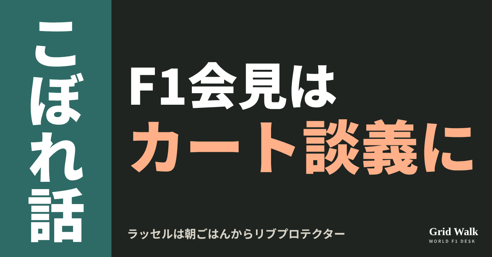
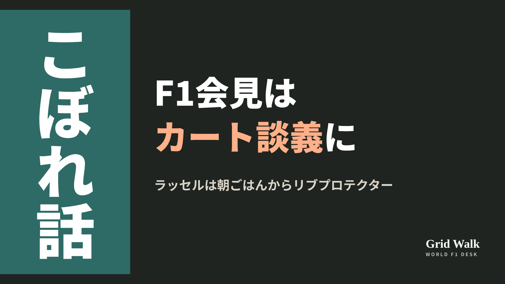
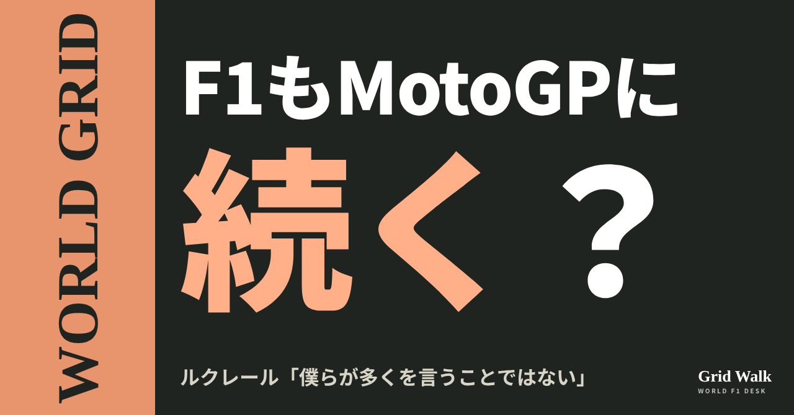
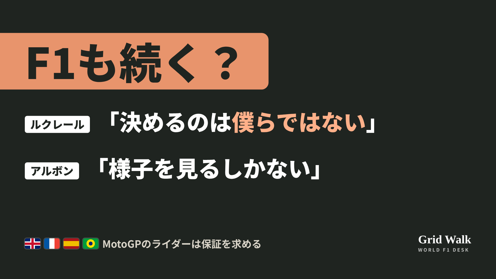
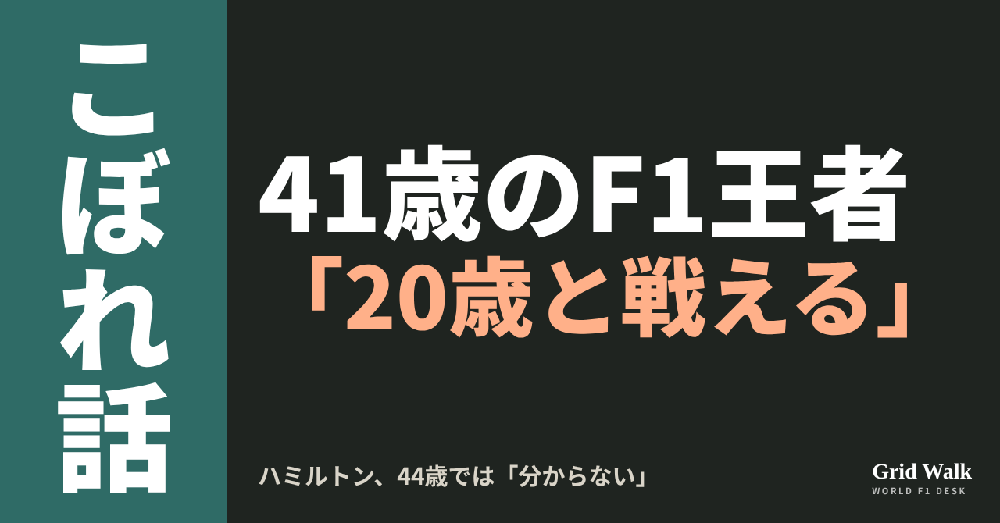
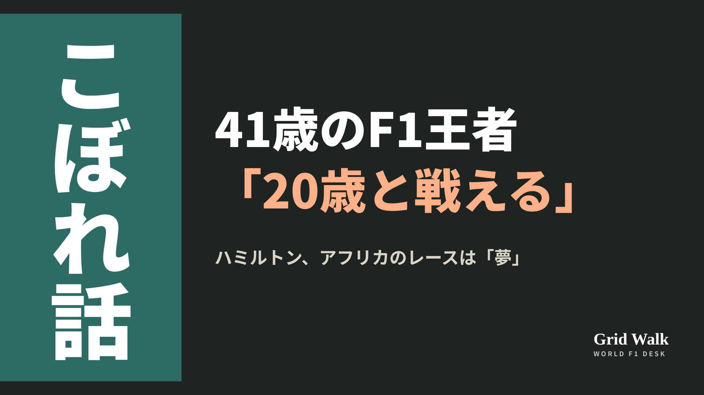
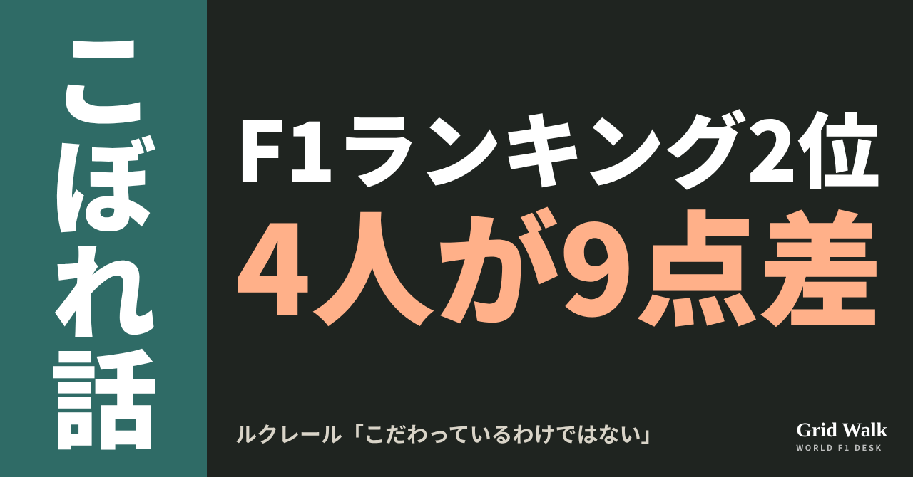
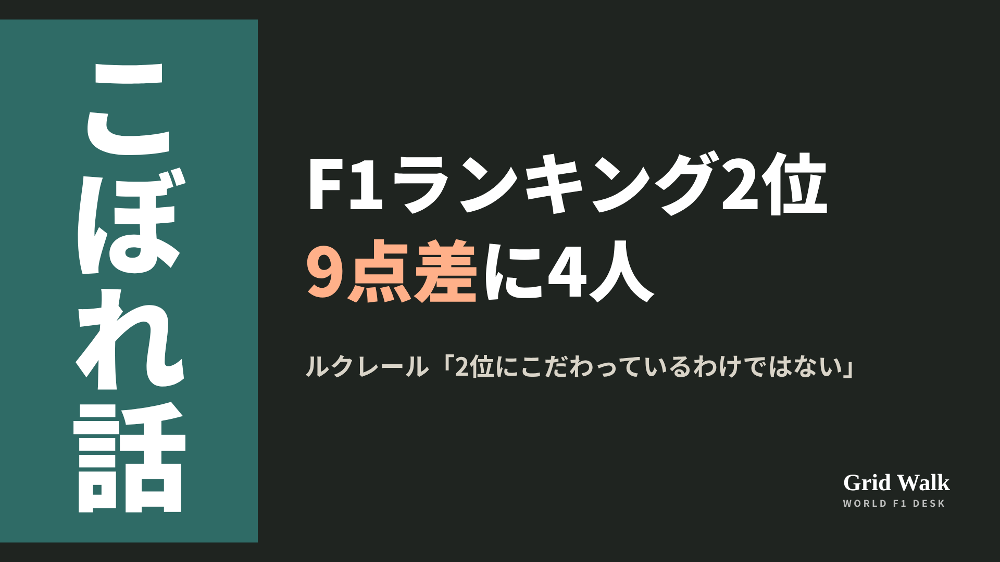
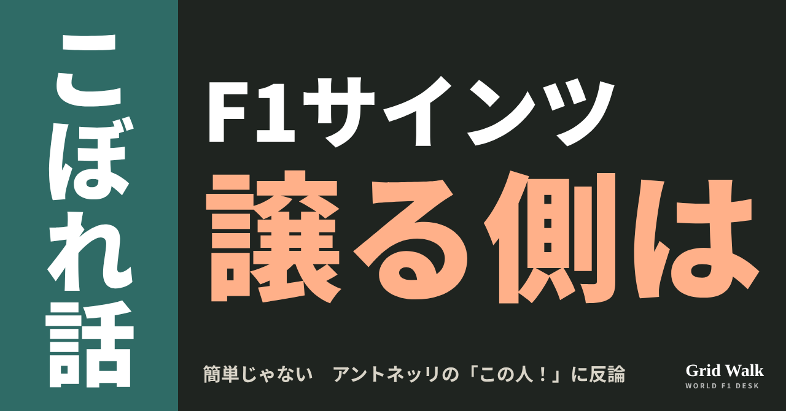
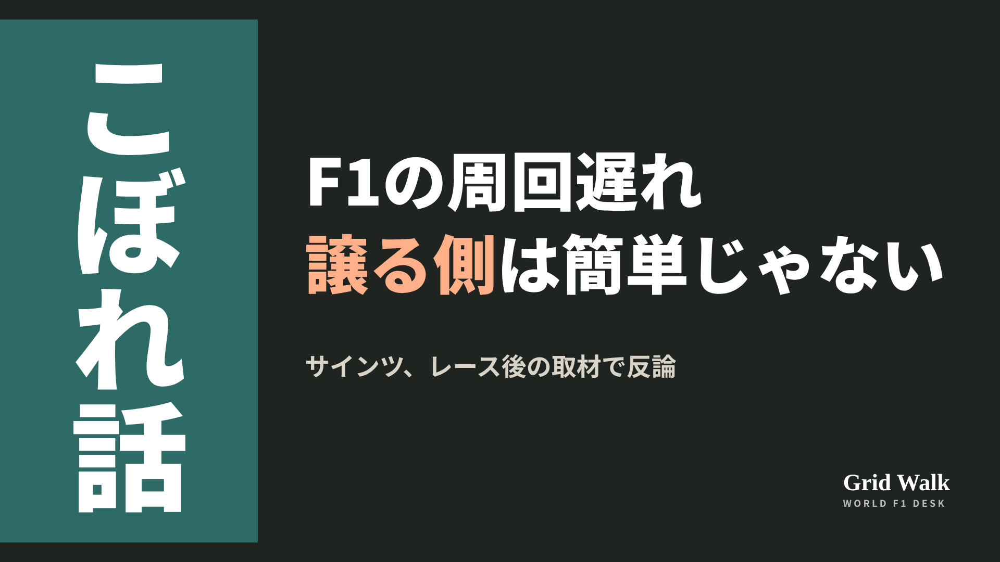

<meta charset="utf-8"><title>10/30夜のコラム note貼り付け</title>
<style>
/* one column of numbered paste steps; text steps vs image steps differ by marker */
:root{--bg:#F5F4F0;--card:#FFFFFF;--ink:#1D2321;--mute:#5F665F;--line:#DCDAD2;--btn:#1F5FBF;--btnok:#2E8B4F;--img:#E9F3EC;--imgink:#22663B;--sans:'IBM Plex Sans JP','Hiragino Sans','Noto Sans JP',sans-serif}
@media (prefers-color-scheme:dark){:root:not([data-theme="light"]){--bg:#171A19;--card:#202423;--ink:#ECEDE8;--mute:#A3AAA2;--line:#343937;--btn:#4D8BE6;--btnok:#3FA866;--img:#1E2C23;--imgink:#8FD3A6;color-scheme:dark}}
:root[data-theme="dark"]{--bg:#171A19;--card:#202423;--ink:#ECEDE8;--mute:#A3AAA2;--line:#343937;--btn:#4D8BE6;--btnok:#3FA866;--img:#1E2C23;--imgink:#8FD3A6;color-scheme:dark}
body{background:var(--bg);color:var(--ink);font-family:var(--sans);font-size:15px;line-height:1.75;padding:20px 16px 60px}
main{max-width:680px;margin:0 auto;display:grid;gap:28px}
header h1{font-size:22px;margin:0 0 6px;text-wrap:balance}
header p{margin:0;color:var(--mute);font-size:14px}
nav{display:flex;gap:8px;flex-wrap:wrap;margin-top:12px}
nav a{border:1px solid var(--line);border-radius:999px;padding:4px 14px;color:var(--ink);text-decoration:none;font-size:14px;background:var(--card)}
.part h2{font-size:18px;line-height:1.5;margin:0 0 12px;text-wrap:balance;display:flex;gap:10px;align-items:baseline;flex-wrap:wrap}
.tag{font-size:13px;background:var(--ink);color:var(--bg);border-radius:6px;padding:1px 9px}
.steps{list-style:none;margin:0;padding:0;display:grid;gap:12px}
.st{background:var(--card);border:1px solid var(--line);border-radius:12px;padding:12px;min-width:0}
.hd{display:flex;align-items:center;gap:8px;margin-bottom:8px}
.no{width:26px;height:26px;border-radius:50%;background:var(--btn);color:#fff;display:inline-flex;align-items:center;justify-content:center;font-size:13px;font-weight:700;flex:0 0 26px}
.im .no{background:var(--btnok)}
.hd em{font-style:normal;font-size:12px;background:var(--img);color:var(--imgink);border-radius:6px;padding:0 8px}
.bx{font-size:13.5px;line-height:1.7;border:1px solid var(--line);border-radius:8px;padding:8px 10px;max-height:110px;overflow:auto;overflow-wrap:anywhere}
.bx.tall{max-height:150px}.bx p{margin:0 0 6px}.bx h2{font-size:14px;margin:8px 0 4px}.bx a{color:var(--btn)}
.st img{display:block;width:100%;max-width:100%;border:1px solid var(--line);border-radius:8px}
.sub{font-size:12.5px;color:var(--mute);margin:6px 0 0}
.cp{width:100%;margin-top:8px;padding:12px;border:0;border-radius:10px;background:var(--btn);color:#fff;font:600 15px var(--sans);cursor:pointer}
.cp.ok{background:var(--btnok)}.cp.dl{background:var(--btnok)}.cp:focus-visible{outline:3px solid var(--ink);outline-offset:2px}
.xh{font-size:15px;margin:20px 0 10px}
.fb{font-size:13px;line-height:1.7;margin:8px 0 0;padding:8px 10px;border-radius:8px;background:var(--img);color:var(--imgink)}
.opts{display:grid;grid-template-columns:repeat(auto-fill,minmax(240px,1fr));gap:10px}
.opt{min-width:0}.opt img{display:block;width:100%;border:1px solid var(--line);border-radius:8px}
.ol{display:flex;align-items:center;gap:8px;margin-top:6px}.ol b{font-size:13px;flex:0 0 auto}.ol .on{font-size:12.5px;color:var(--mute);flex:1;min-width:0}.ol .cp{width:auto;flex:0 0 auto;padding:9px 14px}.ol .cp{margin:0;padding:9px}
.toast{font-size:13px;color:var(--mute);margin-top:6px}
</style>
<main><header><h1>10/30夜のコラム note貼り付け</h1><p>いま公開済みは5本です。青い番号は文章、緑は画像です。</p><nav><a href="#p1">1</a><a href="#p2">2</a><a href="#p3">3</a><a href="#p4">4</a><a href="#p5">5</a></nav></header><section class="part" id="p1"><h2><span class="tag">OFF GRID</span>ラッセル、朝ごはんからリブプロテクター　F1会見がカート談義に</h2><p class="sub">サイトに公開：18:28</p><ol class="steps">
<li class="st im"><div class="hd"><span class="no">1</span><b>見出し画像</b><em>画像</em></div><button class="cp dl" data-img="img/thursday-karting-talk-20261030.png" data-name="thursday-karting-talk-20261030_見出し画像.png">ダウンロード</button></li>
<li class="st"><div class="hd"><span class="no">2</span><b>タイトル</b></div><div class="bx" id="p1t">ラッセル、朝ごはんからリブプロテクター　F1会見がカート談義に</div><button class="cp" data-plain="p1t">タイトルをコピー</button></li>
<li class="st"><div class="hd"><span class="no">3</span><b>本文</b></div><div class="bx tall" id="p1r"><p>メキシコシティGPを前にした現地29日の木曜会見。司会の最後の質問は「来週はFIAのカートの70周年です。カートは皆さんをどう形づくりましたか？」でした。ここから会見は、しばしカート談義に。第1部のラッセル、ベアマン、ガスリーも、第2部のルクレール、アルボン、ペレスも、同じ質問に答えています。</p><p>FIAの会見の書き起こしへのリンクはサイトで → <a href="https://f1gridwalk.github.io/lens/thursday-karting-talk-20261030/?utm_source=note&amp;utm_campaign=thursday-karting-talk-20261030">https://f1gridwalk.github.io/lens/thursday-karting-talk-20261030/?utm_source=note&amp;utm_campaign=thursday-karting-talk-20261030</a></p><h2>ガスリーとベアマン「体に悪いけど、大好き」</h2><p>第1部で最初に答えたガスリーは「正直、人生で最高の時間のひとつ」。当時戦った相手の多くと、今もF1のコースで顔を合わせるといいます。濡れた路面をスリックタイヤで走った日々については、「ノルマンディーでは1年に300日くらい雨が降るから、そういう日がたくさんあった」と振り返りました。</p><p>ベアマンは「ピエールの話に同感です」と始め、冬の朝に暗いうちに起き、外は凍えるほど寒いと分かっている、そんな日々を挙げて、カートは「ただただ純粋な喜び」と話しました。この競技を好きになった理由を思い出すため、今も毎年何日かはカートに乗るそうです。そして話は匂いへ。</p><blockquote><p>「匂いもそう。今カートの日に行くと、あの匂いが、頭の中で思い出を全部よみがえらせるんです。あれを嗅ぐのは間違いなくすごく体に悪いけど、本当に大好き。僕はこれで育ったんです」（ベアマン、FIA会見の書き起こし）</p></blockquote><h2>ラッセル「朝ごはんのときにはリブプロテクター」</h2><p>続くラッセルは、まずこう反応しました。</p><blockquote><p>「最後のそのコメントは、絶対にミームになるね」（ラッセル、FIA会見の書き起こし）</p></blockquote><p>そのうえで「カートは最も純粋なレースのかたち」と言い、カート時代の朝を振り返りました。リブプロテクターは、カートで肋骨を守るための防具です。</p><blockquote><p>「朝起きて最初に着替えるのはレーシングスーツで、朝ごはんのときには、もうリブプロテクターまで着けていました。とにかくレースに行くのが楽しみだったんです」（同）</p></blockquote><p>一方でラッセルは、カートの費用は「少し手に負えなくなってきている」とも話し、近所の公園でサッカーボールを蹴るくらい手軽にカートができるようになってほしい、と続けました。第2部でもアルボンが、今は少し高くなってきているかもしれないと言い、ペレスは「ヨーロッパでカートをする余裕はなかった」と明かしています。ルクレールは「あのころが最高の日々でした」。今のグリッドを見ると、15年、20年前にカートで戦っていた仲間が多いのもいい、とも話しました。</p><h2>ガスリーの「ボウリング」は冗談です</h2><p>第1部では、ガスリーのこんなひとことも。ただし、こちらはカートの質問ではありません。Infobaeの記者に「2021年にここで取った4位を、日曜にどう再現しますか」と聞かれたときの答えです。</p><blockquote><p>「正直な答え、聞きたい？ 1コーナーでちょっとボウリングをすれば、助けになるね」（ガスリー、FIA会見の書き起こし）</p></blockquote><p>もちろん本気ではありません。ガスリーはすぐにまじめな答えに戻り、上位の4チームが完走すれば上位8つの順位は埋まってしまう、それだけトップと中団の差はまだ大きい、と説明しました。そのうえで、今週末は標高なども絡んで驚きが起きてほしいと話し、「自分は、トップ以外のなかで一番にならないといけない」と目標を語りました。</p><p>編集部としては、タイトル争いや来季の話が多い会見のなかで、6人そろって子どものころの顔を見せた時間だったと見ています。</p><p><strong>6人のカートの思い出のなかで、いちばん共感したのはだれの話ですか？</strong></p><p>━━━━━━━━━━</p><p><strong>F1 Grid Walk では、世界のF1ニュースを毎日日本語でまとめています。</strong></p><p>海外の記事の要約を、毎日載せています。</p><p><a href="https://f1gridwalk.github.io/">https://f1gridwalk.github.io/</a></p><p>ほかの海外記事も読みたい方は、F1 Grid Walkへ。</p><p><a href="https://f1gridwalk.github.io/lens/thursday-karting-talk-20261030/">https://f1gridwalk.github.io/lens/thursday-karting-talk-20261030/</a></p><p>━━━━━━━━━━</p><p><a href="https://www.fia.com/news/f1-2026-mexico-city-grand-prix-thursday-press-conference-transcript">出典：FIA（フランス）</a></p></div><button class="cp" data-rich="p1r">本文をコピー</button></li>
<li class="st"><div class="hd"><span class="no">4</span><b>ハッシュタグ</b></div><div class="bx" id="p1h">#F1 #F1jp #メキシコGP #ラッセル #ベアマン #ガスリー #カート #F1こぼれ話 #OFFGRID</div><button class="cp" data-plain="p1h">タグをコピー</button></li>
</ol><h3 class="xh">X</h3><ol class="steps">
<li class="st im"><div class="hd"><b>X用の画像</b><em>画像</em></div><button class="cp dl" data-img="img/x_thursday-karting-talk-20261030.png" data-name="x_thursday-karting-talk-20261030.png">ダウンロード</button></li>
<li class="st"><div class="hd"><b>① noteをシェアするときの文</b></div><div class="bx" id="p1x0">メキシコシティGPの木曜会見がカート談義に。ラッセルは子どものころ朝ごはんからリブプロテクター、ベアマンは「体に悪いけど匂いが大好き」。ガスリーの「ボウリング」の冗談も。noteにまとめました #F1jp #ラッセル</div><button class="cp" data-plain="p1x0">コピー</button></li>
<li class="st"><div class="hd"><b>② ①への返信</b></div><div class="bx" id="p1x1">ほかの海外記事も読みたい方は、F1 Grid Walkへ。
https://f1gridwalk.github.io/lens/thursday-karting-talk-20261030/?utm_source=x&amp;utm_campaign=thursday-karting-talk-20261030</div><button class="cp" data-plain="p1x1">コピー</button></li>
<li class="st"><div class="hd"><b>③ ②への返信</b></div><div class="bx" id="p1x2">毎日の海外F1ニュースは、日本語でこちらにまとめています。
https://f1gridwalk.github.io/</div><button class="cp" data-plain="p1x2">コピー</button></li>
</ol></section><section class="part" id="p2"><h2><span class="tag">WORLD GRID</span>F1もMotoGPに続く？ ルクレール「僕らが多くを言うことではない」</h2><p class="sub">サイトに公開：19:30</p><ol class="steps">
<li class="st im"><div class="hd"><span class="no">1</span><b>見出し画像</b><em>画像</em></div><button class="cp dl" data-img="img/motogp-middle-east-safety-20261030.png" data-name="motogp-middle-east-safety-20261030_見出し画像.png">ダウンロード</button></li>
<li class="st"><div class="hd"><span class="no">2</span><b>タイトル</b></div><div class="bx" id="p2t">F1もMotoGPに続く？ ルクレール「僕らが多くを言うことではない」</div><button class="cp" data-plain="p2t">タイトルをコピー</button></li>
<li class="st"><div class="hd"><span class="no">3</span><b>本文</b></div><div class="bx tall" id="p2r"><p>「F1のドライバーも、MotoGPに続く構え」。10月30日、RacingNews365はこう打ちました。MotoGPのライダーが、カタールGPを前に安全の保証を書面で求めているからです。ただ、FIAのメキシコの会見録を読むと、ドライバーの言葉は様子見に近く、記事とは言葉の主もずれていました。</p><p>FIAの会見録と、各国の元の記事へのリンクはサイトで → <a href="https://f1gridwalk.github.io/lens/motogp-middle-east-safety-20261030/?utm_source=note&amp;utm_campaign=motogp-middle-east-safety-20261030">https://f1gridwalk.github.io/lens/motogp-middle-east-safety-20261030/?utm_source=note&amp;utm_campaign=motogp-middle-east-safety-20261030</a></p><h2>MotoGPのライダーは何を求めた？</h2><p>イギリスのThe Raceによると、ライダーたちはオーストラリアGPの木曜の夜、フィリップアイランドで秘密の会合を開き、出席者の3分の2がカタールで走ることに反対しました。その週末の決勝は、視界の悪さで中止になっています（MotoGP公式）。</p><p>求めているのは、避難計画、空域が閉じたときの費用を補う保険、帰国の補償です（Autosport）。10月28日のセパンでの話し合いは、和やかで建設的だったものの、合意には至りませんでした（Autosport）。ブラジルのGrande Prêmioは29日、カタールの当局が書面で安全の保証を出し、MotoGPは11月6〜8日の開催を変えていないと伝えました。RacingNews365は背景に「イランとアメリカの戦争が激しくなるおそれ」を挙げています。</p><h2>メキシコの会見で、F1のドライバーは</h2><p>29日の木曜会見で、The Athleticの記者が、シャルル・ルクレール、アレクサンダー・アルボン、セルジオ・ペレスの3人に、GPDA（ドライバーの団体）やF1とどんな話をしているかを聞きました。FIAの会見録で、答えたのはルクレールとアルボンです。</p><blockquote><p>「いまは誰にも分からないと思う。1日で変わりうる」「決めるのは僕らではない。決める人たちが、もちろんその全責任を負う。だから、僕らが多くを言うことではない」（ルクレール、FIA会見録／フランス）</p></blockquote><p>ルクレールは途中で、MotoGPのことにも短くふれています。</p><blockquote><p>「全体としては、様子を見るしかないと思う」「MotoGPのほうを見ると、ライダーたちは、求めている保険の保証を得ようとしていて、正しいことをしていると思う」「GPDAではまだそれほど話していないけど、話し合うべきことのリストに、たぶん入っている話題の一つなのは確かだ」（アルボン、FIA会見録／フランス）</p></blockquote><p>アルボンは、MotoGPの動きを全部は追っていないとも断っています。</p><h2>記事と会見録で、言葉の主が違う</h2><p>RacingNews365の記事は、この「GPDAでは」の部分をルクレールの言葉、「いまは誰にも分からない」「決めるのは僕らではない」をペレスの言葉として載せています。会見録では、前者はアルボン、後者はルクレールの答えで、ペレスはこの質問に答えていません。保険の話をアルボンの言葉とした点は、会見録と同じです。</p><p>見出しの「続く構え」も、会見録より一歩先に見えます。「たぶんリストに入っている」と言ったのはアルボンで、ルクレールは「僕らが多くを言うことではない」と話していました。</p><h2>国ごとの伝え方</h2><p>オランダのGPblogは10月26日、「F1ドライバーは、カタールとアブダビのレース中止を求めていない」と打ちました。スペインのmotor16は「マルケスはロサイルへ飛ぶための保証を求める」と、選手権をリードするマルク・マルケスを前に出し、スペイン外務省の「地域の紛争のため、すべての地域にリスクがある」という注意も引いています。イタリアのMotorboxは、ドゥカティのダビデ・タルドッツィがマルケスを「話す勇気を持っていたのは彼だけ」とかばった言葉を見出しにしました。タルドッツィは、マルケスは安全の計画を求めただけで「行きたくない」とは言っていない、とも話しています。</p><p>イギリスのGPFansは「F1のオーナー、リバティ・メディアがライダーの反乱に直面」と、両方のオーナーが同じことを見出しで前に出しました。</p><p>FIAのモハメド・ビン・スライエム会長は、「危険だと感じる場所に、スタッフやドライバー、オフィシャルを連れて行くことは決してない」と話しています（Motorsport.com、10月20日。同じ時期の発言の要約 https://f1gridwalk.github.io/news/en-therace-fia-adamant-gulf-races/ ）。F1のカタールGPは11月29日、アブダビGPは12月6日の予定です。</p><p>編集部としては、F1のドライバーはいまのところ、「続く構え」より様子見の段階に近いと見ています。ライダーの求めた保証の扱いが、3週間後のF1の受け止めを左右しそうです。</p><p><strong>F1のドライバーも、MotoGPのように書面での保証を求めるべきだと思いますか？</strong></p><p>━━━━━━━━━━</p><p><strong>F1 Grid Walk では、世界のF1ニュースを毎日日本語でまとめています。</strong></p><p>海外の記事の要約を、毎日載せています。</p><p><a href="https://f1gridwalk.github.io/">https://f1gridwalk.github.io/</a></p><p>ほかの海外記事も読みたい方は、F1 Grid Walkへ。</p><p><a href="https://f1gridwalk.github.io/lens/motogp-middle-east-safety-20261030/">https://f1gridwalk.github.io/lens/motogp-middle-east-safety-20261030/</a></p><p>━━━━━━━━━━</p><p><a href="https://racingnews365.com/f1-drivers-set-to-follow-motogp-lead-definitely-something-to-discuss">出典：RacingNews365（イギリス）</a></p><p><a href="https://www.fia.com/news/f1-2026-mexico-city-grand-prix-thursday-press-conference-transcript">出典：FIA（フランス）</a></p><p><a href="https://www.the-race.com/motogp/motogp-riders-hold-secret-meeting-amid-qatar-concerns/">出典：The Race（イギリス）</a></p><p><a href="https://www.motogp.com/en/news/2026/10/25/farewell-phillip-island-from-motogp-ceo-carmelo-ezpeleta/1180981">出典：MotoGP公式（スペイン）</a></p><p><a href="https://www.autosport.com/motogp/news/330ukmotogp-seeks-compromise-with-riders-over-qatar-grand-prix/10869098/">出典：Autosport（イギリス）</a></p><p><a href="https://grandepremio.com/en/motogp/motogp-insists-qatar-gp-will-go-ahead-despite-riders-safety-objections/">出典：Grande Prêmio（英語版）（ブラジル）</a></p><p><a href="https://www.gpblog.com/nl/exclusief-nieuws/f1-rijders-eisen-geen-afgelasting-races-in-qatar-en-abu-dhabi">出典：GPblog（オランダ語版）（オランダ）</a></p><p><a href="https://www.motor16.com/las-ultimas-noticias/gp-qatar-motogp-marquez-garantias/">出典：motor16（スペイン）</a></p><p><a href="https://www.motorbox.com/moto/sport/motogp/news/qatar-guerra-rinvio-tardozzi-marquez-unico-coraggio-parlare">出典：Motorbox（イタリア）</a></p><p><a href="https://www.gpfans.com/en/f1-news/1092107/f1-liberty-media-moto-gp-rider-revolt-qatar-grand-prix-safety-fears/">出典：GPFans（イギリス）</a></p><p><a href="https://au.motorsport.com/f1/news/fia-expects-f1-races-in-qatar-and-abu-dhabi-to-continue-as-planned/10866548/">出典：Motorsport.com（オーストラリア版）（オーストラリア）</a></p></div><button class="cp" data-rich="p2r">本文をコピー</button></li>
<li class="st"><div class="hd"><span class="no">4</span><b>ハッシュタグ</b></div><div class="bx" id="p2h">#F1 #F1jp #MotoGP #カタールGP #アブダビGP #ルクレール #アルボン #GPDA #WORLDGRID #F1ニュース</div><button class="cp" data-plain="p2h">タグをコピー</button></li>
</ol><h3 class="xh">X</h3><ol class="steps">
<li class="st im"><div class="hd"><b>X用の画像</b><em>画像</em></div><button class="cp dl" data-img="img/x_motogp-middle-east-safety-20261030.png" data-name="x_motogp-middle-east-safety-20261030.png">ダウンロード</button></li>
<li class="st"><div class="hd"><b>① noteをシェアするときの文</b></div><div class="bx" id="p2x0">MotoGPのライダーが中東の安全を訴え、F1のドライバーも続くのか。会見録では、ルクレールは「僕らが多くを言うことではない」。各国の伝え方と、言葉の主のずれをnoteにまとめました #F1jp #ルクレール</div><button class="cp" data-plain="p2x0">コピー</button></li>
<li class="st"><div class="hd"><b>② ①への返信</b></div><div class="bx" id="p2x1">ほかの海外記事も読みたい方は、F1 Grid Walkへ。
https://f1gridwalk.github.io/lens/motogp-middle-east-safety-20261030/?utm_source=x&amp;utm_campaign=motogp-middle-east-safety-20261030</div><button class="cp" data-plain="p2x1">コピー</button></li>
<li class="st"><div class="hd"><b>③ ②への返信</b></div><div class="bx" id="p2x2">毎日の海外F1ニュースは、日本語でこちらにまとめています。
https://f1gridwalk.github.io/</div><button class="cp" data-plain="p2x2">コピー</button></li>
</ol></section><section class="part" id="p3"><h2><span class="tag">OFF GRID</span>ハミルトン「41歳なら20歳と戦える」　44歳では「分からない」</h2><p class="sub">サイトに公開：21:30</p><ol class="steps">
<li class="st im"><div class="hd"><span class="no">1</span><b>見出し画像</b><em>画像</em></div><button class="cp dl" data-img="img/hamilton-built-differently-20261030.png" data-name="hamilton-built-differently-20261030_見出し画像.png">ダウンロード</button></li>
<li class="st"><div class="hd"><span class="no">2</span><b>タイトル</b></div><div class="bx" id="p3t">ハミルトン「41歳なら20歳と戦える」　44歳では「分からない」</div><button class="cp" data-plain="p3t">タイトルをコピー</button></li>
<li class="st"><div class="hd"><span class="no">3</span><b>本文</b></div><div class="bx tall" id="p3r"><p>「41歳なら、20歳と戦えます」。メキシコシティGPを前にした10月29日（木）、フェラーリのルイス・ハミルトンは、キャリアを延ばすことについて記者に聞かれ、こう答えました（ロイター、英Sky Sports）。ただし、44歳ではどうか、については「だれにも分からない」とも言っています（Sky Sports）。</p><p>Sky Sportsやロイター、AP通信の元の記事へのリンクと、ドイツ・イタリア・スペインでの伝え方はサイトで → <a href="https://f1gridwalk.github.io/lens/hamilton-built-differently-20261030/?utm_source=note&amp;utm_campaign=hamilton-built-differently-20261030">https://f1gridwalk.github.io/lens/hamilton-built-differently-20261030/?utm_source=note&amp;utm_campaign=hamilton-built-differently-20261030</a></p><h2>「70年で、僕のような人はいなかった」</h2><p>Sky Sportsによると、ハミルトンは自分のことをこう話しています。</p><blockquote><p>「まず、この70年で、僕のような人はここにいなかった」「だから、自分は違うつくりなんだと思います」（ハミルトン、Sky Sports／イギリス）</p></blockquote><p>年齢による、まだ見えない難しさも認めたうえで、話は反応の速さへ。</p><blockquote><p>「反応の速さは落ちる、という思い込みが、本当にたくさんありました」「前のレースでの僕の反応、見ましたか？ ここにいる、いちばん若い人たちの何人かより速いんです」（ハミルトン、Sky Sports／イギリス）</p></blockquote><p>前のレースは、10月25日のアメリカGPです（F1公式サイト）。</p><h2>「44歳で」は分からない</h2><blockquote><p>「4年後も今のことを続けたいかどうかは、言えません」「44歳で20歳と戦えるかどうかは、だれにも分かりません。でも41歳なら、20歳と戦えます」（ハミルトン、Sky Sports／イギリス）</p></blockquote><blockquote><p>「速さがないまま居続けて、歓迎されなくなるようなことは、絶対にしたくない」（同）</p></blockquote><blockquote><p>「今も全力で、この先しばらくはそうです」「30年代もここにいるかは、時間がたてば分かります」（ハミルトン、ロイター／イギリス）</p></blockquote><p>契約は、Sky Sportsによると2027年末までで、もう1年延ばせるオプションがあるとされています。2027年については、バスール代表が7月、伊紙コリエレ・デラ・セラに残留を認めていました（AFP）。今季は6月のバルセロナ・カタルーニャGPで、フェラーリでの初優勝を挙げています（F1公式サイト）。</p><h2>アフリカのレースは「夢」</h2><p>F1は10月、ルワンダと10年契約を結び、2030年代にグランプリを開くと発表しました。アフリカでは1993年以来のレースになります（ロイター、Sky Sports）。Sky Sportsによると、ハミルトンは2030年シーズンの開幕時に45歳です。1週間前、アメリカGPの木曜日には、こう話していました。</p><blockquote><p>「アフリカでレースがあるから、もっとずっと長く残らないといけなくなりました。それが僕の夢だったので」「体を保つために、戦い続けないといけません」（ハミルトン、AP通信／アメリカ）</p></blockquote><p>Sky Sportsは、年齢のことに加え、ルワンダのコースが2030年に間に合うかもまったく分からないため、この話をどこまで本気で受け取るべきか、はじめははっきりしなかったと書いています。ドイツのdpa通信は、成績が出れば続ける、という言葉も伝えました。イタリアのANSA通信の記事（Diretta.it掲載、英紙タイムズの報道による）の見出しは「45歳になっても」ですが、45歳は本人の言葉ではなく記事の計算です。スペインのMotor16は10月18日、おそらく本人は走れないだろうと見ていました。</p><p>ちなみにF1公式サイトによると、バルセロナで勝ったハミルトンは41歳5か月7日。ハミルトンより年上で勝った、いちばん最近のドライバーは、1970年の南アフリカGP（キャラミ）のジャック・ブラバムで、43歳11か月でした。最年長の勝利の話も、アフリカにつながっています。</p><p>編集部としては、「41歳なら」と「44歳は分からない」を一緒に話したところに、強気だけではない見通しが出ていると見ています。アフリカのレースについての発言は、ドイツの記事の要約もサイトにあります。https://f1gridwalk.github.io/news/de-motorsporttotal-hamilton-africa-gp/</p><p><strong>ルワンダの最初のグリッドに、ハミルトンは並んでいると思いますか？</strong></p><p>━━━━━━━━━━</p><p><strong>F1 Grid Walk では、世界のF1ニュースを毎日日本語でまとめています。</strong></p><p>海外の記事の要約を、毎日載せています。</p><p><a href="https://f1gridwalk.github.io/">https://f1gridwalk.github.io/</a></p><p>ほかの海外記事も読みたい方は、F1 Grid Walkへ。</p><p><a href="https://f1gridwalk.github.io/lens/hamilton-built-differently-20261030/">https://f1gridwalk.github.io/lens/hamilton-built-differently-20261030/</a></p><p>━━━━━━━━━━</p><p><a href="https://www.skysports.com/f1/news/13605468/lewis-hamilton-ferrari-driver-says-he-is-built-differently-amid-defiance-over-extending-his-f1-career-into-2030s">出典：Sky Sports（イギリス）</a></p><p><a href="https://www.timeslive.co.za/motoring/2026-10-30-lewis-hamilton-all-in-for-f1s-future/">出典：ロイター（TimesLIVE掲載）（イギリス）</a></p><p><a href="https://www.lanacion.com.ar/usa/hamilton-cheers-f1s-rwanda-plan-hints-at-delaying-retirement-to-race-in-africa-nid22102026/">出典：AP通信（La Nación英語版掲載）（アメリカ）</a></p><p><a href="https://www.volksstimme.de/sport/hamiltons-sehnsucht-weitermachen-bis-zum-afrika-comeback-4343566">出典：dpa通信（Volksstimme掲載）（ドイツ）</a></p><p><a href="https://www.diretta.it/news/auto-formula-1-formula-1-hamilton-confessa-voglio-correre-in-ruanda-anche-se-avro-45-anni/htSQ0BEs/">出典：ANSA通信（Diretta.it掲載）（イタリア）</a></p><p><a href="https://www.motor16.com/deportes/gran-premio-africa-f1-hamilton/">出典：Motor16（スペイン）</a></p><p><a href="https://www.gulf-times.com/article/728568/sport/formula-1/ferrari-confirm-hamilton-staying-next-year">出典：AFP（Gulf Times掲載）（フランス）</a></p><p><a href="https://www.formula1.com/en/latest/article/the-top-10-oldest-f1-grand-prix-winners-and-where-hamilton-now-ranks.43JDzWgn01nXtU7slsRa94">出典：F1公式サイト（イギリス）</a></p></div><button class="cp" data-rich="p3r">本文をコピー</button></li>
<li class="st"><div class="hd"><span class="no">4</span><b>ハッシュタグ</b></div><div class="bx" id="p3h">#F1 #F1jp #ハミルトン #ルイスハミルトン #フェラーリ #メキシコGP #ルワンダ #F1こぼれ話 #OFFGRID</div><button class="cp" data-plain="p3h">タグをコピー</button></li>
</ol><h3 class="xh">X</h3><ol class="steps">
<li class="st im"><div class="hd"><b>X用の画像</b><em>画像</em></div><button class="cp dl" data-img="img/x_hamilton-built-differently-20261030.png" data-name="x_hamilton-built-differently-20261030.png">ダウンロード</button></li>
<li class="st"><div class="hd"><b>① noteをシェアするときの文</b></div><div class="bx" id="p3x0">ハミルトン「41歳なら20歳と戦える」。でも44歳では「分からない」。2030年代のルワンダ初開催まで走るのか、各国の見方をnoteにまとめました #F1jp #ハミルトン</div><button class="cp" data-plain="p3x0">コピー</button></li>
<li class="st"><div class="hd"><b>② ①への返信</b></div><div class="bx" id="p3x1">ほかの海外記事も読みたい方は、F1 Grid Walkへ。
https://f1gridwalk.github.io/lens/hamilton-built-differently-20261030/?utm_source=x&amp;utm_campaign=hamilton-built-differently-20261030</div><button class="cp" data-plain="p3x1">コピー</button></li>
<li class="st"><div class="hd"><b>③ ②への返信</b></div><div class="bx" id="p3x2">毎日の海外F1ニュースは、日本語でこちらにまとめています。
https://f1gridwalk.github.io/</div><button class="cp" data-plain="p3x2">コピー</button></li>
</ol></section><section class="part" id="p4"><h2><span class="tag">OFF GRID</span>ルクレール「2位にこだわっているわけではない」　4人が9点差</h2><p class="sub">サイトに公開：00:16</p><ol class="steps">
<li class="st im"><div class="hd"><span class="no">1</span><b>見出し画像</b><em>画像</em></div><button class="cp dl" data-img="img/leclerc-p2-ferrari-20261030.png" data-name="leclerc-p2-ferrari-20261030_見出し画像.png">ダウンロード</button></li>
<li class="st"><div class="hd"><span class="no">2</span><b>タイトル</b></div><div class="bx" id="p4t">ルクレール「2位にこだわっているわけではない」　4人が9点差</div><button class="cp" data-plain="p4t">タイトルをコピー</button></li>
<li class="st"><div class="hd"><span class="no">3</span><b>本文</b></div><div class="bx tall" id="p4r"><p>メキシコシティGPを前にした10月29日（木）、フェラーリのシャルル・ルクレールはドライバーズランキングの2位について、「2位にこだわっているわけではない」と話しました（Motorsport.com）。ただ、その2位争いはかなりの接戦です。2位から5位までの4人が、9点差の中にいます。</p><p>Motorsport.comとイタリアの2紙の元の記事、F1公式の順位表へのリンクはサイトで → <a href="https://f1gridwalk.github.io/lens/leclerc-p2-ferrari-20261030/?utm_source=note&amp;utm_campaign=leclerc-p2-ferrari-20261030">https://f1gridwalk.github.io/lens/leclerc-p2-ferrari-20261030/?utm_source=note&amp;utm_campaign=leclerc-p2-ferrari-20261030</a></p><h2>2位から5位まで9点差</h2><p>F1公式サイトの順位表で、メキシコシティGPの前の時点（10月25日のアメリカGPまで）を見ると、首位はアンドレア・キミ・アントネッリ（メルセデス）で365点。2位ジョージ・ラッセル（メルセデス）242点、3位ルイス・ハミルトン（フェラーリ）241点、4位マックス・フェルスタッペン（レッドブル）236点、5位ルクレール233点と続きます。ラッセルとハミルトンの差は1点です。</p><p>アメリカGPの決勝は、F1公式サイトの結果で、ルクレールが2位、フェルスタッペンが3位、ハミルトンが4位、ラッセルが8位でした。残りは、第19戦のメキシコシティGPから第23戦のアブダビGPまでの5戦です。</p><h2>「そんなに大きな意味はない」</h2><p>イタリアのMotorionlineによると、ルクレールはまず「そんなに大きな意味はない」と言いました。続きは、イギリスのMotorsport.comが伝えています。</p><blockquote><p>「みんな知っているとおり、2位は3位よりいいし、3位は4位よりいい。だから、できることを最大限にやるだけ」「（大事なのは）1戦1戦を最大限にして、シーズンが終わるまでに何勝かを狙うこと」（ルクレール、Motorsport.com／イギリス）</p></blockquote><blockquote><p>「それができれば、2位は選手権の自然な締めくくりになる。できなければ、2位で終えるのは難しい。でも、ドライバーズ選手権の2位にこだわっているわけではない」（同）</p></blockquote><p>Motorsport.comは、ルクレールがシンガポールとアメリカGPで続けて2位に入ったことを挙げ、本人も「今はいい流れにいると思う」と話したと書いています。ただ、今週末の本命かと聞かれると、否定的でした。</p><blockquote><p>「メルセデスはどこへ行っても本命のままだと思う」「レッドブルも最近、とても、とても強いところを見せている」（ルクレール、OA Sport／イタリア）</p></blockquote><h2>ラッセル「大事な順位は一つだけ」</h2><p>同じMotorsport.comの記事には、2位のラッセルの言葉も載っています。こちらは、ルクレールよりさらにはっきりしていました。</p><blockquote><p>「グリッドのどのドライバーにとっても、大事な順位は一つだけ。1位だ」「1位以外のなかでいちばん、というのは、子どものころに夢見るものじゃない」「このスポーツでは、1位か、何もないか、という感じだ」（ラッセル、Motorsport.com／イギリス）</p></blockquote><h2>チームの2位は119点のリード</h2><p>チームの順位は、もっと開いています。F1公式サイトのチーム順位表（メキシコシティGPの前の時点）では、首位メルセデスが607点、2位フェラーリが474点。3位レッドブルと4位マクラーレンは355点で並んでいて、フェラーリとの差は119点です。前のメルセデスとは133点離れています。</p><p>編集部としては、残り5戦で119点の差があるので、フェラーリのコンストラクターズ2位はかなり守りやすい位置にあると見ています。ドライバーの2位のほうは、1点差のラッセルとハミルトンを含めて、まだだれのものとも言えなさそうです。</p><p><strong>ドライバーズランキング2位でシーズンを終えるのは、ラッセル、ハミルトン、フェルスタッペン、ルクレールのだれだと思いますか？</strong></p><p>━━━━━━━━━━</p><p><strong>F1 Grid Walk では、世界のF1ニュースを毎日日本語でまとめています。</strong></p><p>海外の記事の要約を、毎日載せています。</p><p><a href="https://f1gridwalk.github.io/">https://f1gridwalk.github.io/</a></p><p>ほかの海外記事も読みたい方は、F1 Grid Walkへ。</p><p><a href="https://f1gridwalk.github.io/lens/leclerc-p2-ferrari-20261030/">https://f1gridwalk.github.io/lens/leclerc-p2-ferrari-20261030/</a></p><p>━━━━━━━━━━</p><p><a href="https://sports.yahoo.com/articles/charles-leclerc-reveals-really-wants-213431361.html">出典：Motorsport.com（Yahoo Sports）（イギリス）</a></p><p><a href="https://f1grandprix.motorionline.com/leclerc-messico-ferrari-favorita-secondo-posto-2027/">出典：Motorionline（F1grandprix）（イタリア）</a></p><p><a href="https://www.oasport.it/2026/10/charles-leclerc-parla-chiaro-se-vogliamo-vincere-in-messico-dobbiamo-essere-perfetti/">出典：OA Sport（イタリア）</a></p><p><a href="https://www.formula1.com/en/results/2026/drivers">出典：F1公式サイト（イギリス）</a></p><p><a href="https://www.formula1.com/en/results/2026/team">出典：F1公式サイト（イギリス）</a></p><p><a href="https://www.formula1.com/en/results/2026/races/1297/united-states/race-result">出典：F1公式サイト（イギリス）</a></p><p><a href="https://www.formula1.com/en/racing/2026">出典：F1公式サイト（イギリス）</a></p></div><button class="cp" data-rich="p4r">本文をコピー</button></li>
<li class="st"><div class="hd"><span class="no">4</span><b>ハッシュタグ</b></div><div class="bx" id="p4h">#F1 #F1jp #ルクレール #フェラーリ #ラッセル #ハミルトン #フェルスタッペン #メキシコシティGP #F1こぼれ話 #OFFGRID</div><button class="cp" data-plain="p4h">タグをコピー</button></li>
</ol><h3 class="xh">X</h3><ol class="steps">
<li class="st im"><div class="hd"><b>X用の画像</b><em>画像</em></div><button class="cp dl" data-img="img/x_leclerc-p2-ferrari-20261030.png" data-name="x_leclerc-p2-ferrari-20261030.png">ダウンロード</button></li>
<li class="st"><div class="hd"><b>① noteをシェアするときの文</b></div><div class="bx" id="p4x0">ランキング2位から5位まで4人が9点差。それでもルクレールは「2位にこだわっているわけではない」。フェラーリはチーム2位を守れるか、noteにまとめました #F1jp #ルクレール</div><button class="cp" data-plain="p4x0">コピー</button></li>
<li class="st"><div class="hd"><b>② ①への返信</b></div><div class="bx" id="p4x1">ほかの海外記事も読みたい方は、F1 Grid Walkへ。
https://f1gridwalk.github.io/lens/leclerc-p2-ferrari-20261030/?utm_source=x&amp;utm_campaign=leclerc-p2-ferrari-20261030</div><button class="cp" data-plain="p4x1">コピー</button></li>
<li class="st"><div class="hd"><b>③ ②への返信</b></div><div class="bx" id="p4x2">毎日の海外F1ニュースは、日本語でこちらにまとめています。
https://f1gridwalk.github.io/</div><button class="cp" data-plain="p4x2">コピー</button></li>
</ol></section><section class="part" id="p5"><h2><span class="tag">OFF GRID</span>サインツ「譲る側は簡単じゃない」　アントネッリの「この人！」に反論</h2><p class="sub">サイトに公開：02:17</p><ol class="steps">
<li class="st im"><div class="hd"><span class="no">1</span><b>見出し画像</b><em>画像</em></div><button class="cp dl" data-img="img/sainz-blue-flags-20261030.png" data-name="sainz-blue-flags-20261030_見出し画像.png">ダウンロード</button></li>
<li class="st"><div class="hd"><span class="no">2</span><b>タイトル</b></div><div class="bx" id="p5t">サインツ「譲る側は簡単じゃない」　アントネッリの「この人！」に反論</div><button class="cp" data-plain="p5t">タイトルをコピー</button></li>
<li class="st"><div class="hd"><span class="no">3</span><b>本文</b></div><div class="bx tall" id="p5r"><p>アメリカGPの36周目。首位のアントネッリが、周回遅れにしようとしていたサインツに追いつきました。ところが乱れた空気でロックアップし、コースの外へ。無線には「ああ、この人！」。レース後の取材で、サインツはこう話しました。「道を譲る側は、簡単じゃない」。</p><p>元の記事へのリンクと、青旗の決まりの解説はサイトで → <a href="https://f1gridwalk.github.io/lens/sainz-blue-flags-20261030/?utm_source=note&amp;utm_campaign=sainz-blue-flags-20261030">https://f1gridwalk.github.io/lens/sainz-blue-flags-20261030/?utm_source=note&amp;utm_campaign=sainz-blue-flags-20261030</a></p><h2>36周目、乱れた空気の中で</h2><p>イギリスのPlanetF1とMotorsport Weekによると、56周のレースで今季9勝目と王座の可能性がかかったアントネッリが、サインツの乱れた空気の中でロックアップし、コースを外れました。</p><blockquote><p>「ああ、この人！」「なんてこった！」（アントネッリ、チーム無線／Motorsport Week・イギリス）</p></blockquote><p>F1の公式Xも、レース中に「ああ、この人…」の無線を流しています（GrandPrix247／イギリスが記事に埋め込み）。サインツはチームにこう伝えていました。</p><blockquote><p>「アントネッリを行かせるつもりだったけど、彼がロックアップした」（サインツ、チームに／PlanetF1・イギリス）</p></blockquote><p>アントネッリはそのまま、ルクレールに13秒差をつけて優勝。サインツは1周目にリンドブラッドとの接触でフロントウイングを壊し、18位でした（PlanetF1）。アントネッリがレース後にこの場面について話した言葉は、伝えられていません。</p><h2>サインツ「トップの人たちへ」</h2><p>レース後、サインツは報道陣にこう話しています。</p><blockquote><p>「問題は、トップの車と僕らの速さの差がとても大きいこと。3秒か4秒にもなります。だから、行かせようと計算したタイミングで、思ったより早く追いつかれたり、その逆だったりするんです」（サインツ、PlanetF1／イギリス）</p></blockquote><blockquote><p>「トップの人たちへ。僕は両方の立場を経験しています。フェラーリ時代は、たくさんの車を周回遅れにしました。今は周回遅れにされる側で、はっきり言えるのは、道を譲る側は簡単じゃないということです。だから、僕らに我慢してほしい。先頭を走っているときに見えるほど、単純なことじゃないんです」（サインツ、PlanetF1／イギリス）</p></blockquote><p>決まりのうえでは、追いつかれた車は「最初の機会」に速い車を前に出さなければなりません。何秒差で合図が出るかなど、くわしくはサイトのルールブックで（https://f1gridwalk.github.io/deep/rules/blue-flag/ ）。</p><h2>ハンガリーでも、スパでも</h2><p>7月のハンガリーGPでは、勝利を争うピアストリに周回遅れにされる場面で接触し、サインツに5秒加算の罰が出ました。ピアストリはこれまで見た中でも「いちばんばかげたこと」の一つと言い、サインツはピアストリが「もう少し気をつけるべきだった」と返しています（PlanetF1）。イギリスのCrash.netは、この日は周回遅れになる車の番号の表示とハンドルのランプが働かなかった一方、車載映像ではサインツが8回の青旗を通っていたと伝えています。</p><p>アントネッリとの間でも、7月のベルギーGPのフリー走行で、アントネッリが無線で「サインツ、なんてばかなんだ！」と言ったことがあります。サインツは「ライバルをののしるのは禁止されていると思う」と返し、アントネッリは「とっさに言ったことは、たぶん最善ではなかった。でも、かなり危なかった」と話しました（The Race／イギリス）。</p><p>同じオースティンでは、アロンソが「グリッドの下3分の1」の質を批判していました（https://f1gridwalk.github.io/lens/alonso-albon-backmarkers-20261026/ ）。サインツはこの見方には同調せず、全員が高い水準にあると話しています（https://f1gridwalk.github.io/news/en-planetf1-sainz-lindblad-alonso/ ）。編集部としては、先頭のドライバーにも、アロンソにも、後ろを走る側の言い分を伝えた形だと見ています。元の記事の要約はサイトにあります（https://f1gridwalk.github.io/news/en-planetf1-sainz-blue-flag-antonelli/ ）。</p><p><strong>周回遅れの場面、我慢が要るのは抜く側と譲る側、どちらだと思いますか？</strong></p><p>━━━━━━━━━━</p><p><strong>F1 Grid Walk では、世界のF1ニュースを毎日日本語でまとめています。</strong></p><p>海外の記事の要約を、毎日載せています。</p><p><a href="https://f1gridwalk.github.io/">https://f1gridwalk.github.io/</a></p><p>ほかの海外記事も読みたい方は、F1 Grid Walkへ。</p><p><a href="https://f1gridwalk.github.io/lens/sainz-blue-flags-20261030/">https://f1gridwalk.github.io/lens/sainz-blue-flags-20261030/</a></p><p>━━━━━━━━━━</p><p><a href="https://www.planetf1.com/news/carlos-sainz-defends-blue-flag-kimi-antonelli-us-gp-complaint">出典：PlanetF1（イギリス）</a></p><p><a href="https://www.motorsportweek.com/2026/10/29/sainz-asks-antonelli-blue-flag-frustration/">出典：Motorsport Week（イギリス）</a></p><p><a href="https://www.grandprix247.com/formula-1-news/united-states-grand-prix-kimi-antonelli-wins-after-a-champions-drive-maiden-formula-1-title-has-to-wait">出典：GrandPrix247（イギリス）</a></p><p><a href="https://www.crash.net/f1/news/1101948/1/hungary-f1-onboard-contradicts-carlos-sainzs-blue-flags-claim">出典：Crash.net（イギリス）</a></p><p><a href="https://www.the-race.com/formula-1/sainz-lambasts-antonelli-over-idiot-spa-practice-spat/">出典：The Race（イギリス）</a></p><p><a href="https://www.planetf1.com/news/carlos-sainz-arvid-lindblad-disagrees-fernando-alonso-very-low-quality-driver-criticism">出典：PlanetF1（イギリス）</a></p></div><button class="cp" data-rich="p5r">本文をコピー</button></li>
<li class="st"><div class="hd"><span class="no">4</span><b>ハッシュタグ</b></div><div class="bx" id="p5h">#F1 #F1jp #サインツ #アントネッリ #ウィリアムズ #メルセデス #アメリカGP #青旗 #F1こぼれ話 #OFFGRID</div><button class="cp" data-plain="p5h">タグをコピー</button></li>
</ol><h3 class="xh">X</h3><ol class="steps">
<li class="st im"><div class="hd"><b>X用の画像</b><em>画像</em></div><button class="cp dl" data-img="img/x_sainz-blue-flags-20261030.png" data-name="x_sainz-blue-flags-20261030.png">ダウンロード</button></li>
<li class="st"><div class="hd"><b>① noteをシェアするときの文</b></div><div class="bx" id="p5x0">アメリカGP、青旗の場面でアントネッリは無線で「ああ、この人！」。サインツはレース後に「譲る側は簡単じゃない」と反論しました。noteにまとめました #F1jp #サインツ</div><button class="cp" data-plain="p5x0">コピー</button></li>
<li class="st"><div class="hd"><b>② ①への返信</b></div><div class="bx" id="p5x1">ほかの海外記事も読みたい方は、F1 Grid Walkへ。
https://f1gridwalk.github.io/lens/sainz-blue-flags-20261030/?utm_source=x&amp;utm_campaign=sainz-blue-flags-20261030</div><button class="cp" data-plain="p5x1">コピー</button></li>
<li class="st"><div class="hd"><b>③ ②への返信</b></div><div class="bx" id="p5x2">毎日の海外F1ニュースは、日本語でこちらにまとめています。
https://f1gridwalk.github.io/</div><button class="cp" data-plain="p5x2">コピー</button></li>
</ol></section></main><script>
function done(b,msg){const t=b.dataset.t||b.textContent;b.dataset.t=t;b.classList.add('ok');b.textContent=msg||'コピーしました';setTimeout(()=>{b.classList.remove('ok');b.textContent=t},2000)}
function selectEl(el){const r=document.createRange();r.selectNodeContents(el);const s=getSelection();s.removeAllRanges();s.addRange(r)}
async function rich(el,b){
  try{await navigator.clipboard.write([new ClipboardItem({'text/html':new Blob([el.innerHTML],{type:'text/html'}),'text/plain':new Blob([el.innerText],{type:'text/plain'})})]);done(b);return}catch(e){}
  selectEl(el);let ok=false;try{ok=document.execCommand('copy')}catch(e){}
  if(ok){getSelection().removeAllRanges();done(b)}else{done(b,'選択しました。コピーしてください')}}
async function plain(el,b){
  try{await navigator.clipboard.writeText(el.innerText);done(b);return}catch(e){}
  selectEl(el);let ok=false;try{ok=document.execCommand('copy')}catch(e){}
  if(ok){getSelection().removeAllRanges();done(b)}else{done(b,'選択しました。コピーしてください')}}
let dlns=null;(async()=>{try{dlns=await window.claude?.use?.("downloads")}catch(e){dlns=null}})();
async function img(src,b){
  b.dataset.t=b.dataset.t||b.textContent;
  if(!dlns){try{dlns=await window.claude?.use?.("downloads")}catch(e){}}
  if(!dlns){b.textContent='ダウンロードできませんでした';setTimeout(()=>{b.textContent=b.dataset.t},3500);return}
  try{const blob=await fetch(src).then(r=>r.blob());b.textContent='保存の確認を開いています…';
    await dlns.save({filename:b.dataset.name,data:blob});done(b,'ダウンロードしました')}
  catch(e){const c=e&&e.code;b.textContent=c==='declined'?'キャンセルしました':c==='rate_limited'?'少し待ってからもう一度押してください':'ダウンロードできませんでした';setTimeout(()=>{b.textContent=b.dataset.t},3500)}}
document.querySelectorAll('.cp').forEach(b=>b.addEventListener('click',()=>{
  if(b.dataset.rich)rich(document.getElementById(b.dataset.rich),b);
  else if(b.dataset.plain)plain(document.getElementById(b.dataset.plain),b);
  else img(b.dataset.img,b)}));
</script>